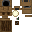

会报时的挂钟，火药版更阴沉。
参数
类型挂钟
合成闹钟 + 4 火药
报时整点
详细教程
怎么获得
先做普通布谷鸟闹钟：一块木板在上、一份安山机壳居中、一只时钟在下，竖着摆三格。再把它放回工作台正中，四边各围一份火药，就得到神秘版本。竖着三格一次只出一只，想批量做得先备够时钟和火药。
火药要四份，少一份都合不出来；闹钟本身还要一只原版时钟，所以得先攒金锭。动手前想清楚：这一步会把普通钟消耗掉，没有退回的余地，最好一次做两只备用。火药要四份，摆成十字围住钟体，少一份合成表就不认。
怎么用
贴在墙上，钟面朝外。世界时间走到整点时，钟顶的小门弹开，布谷鸟探出来叫一声再缩回去，白天黑夜都按世界时间走，不需要接动力。钟面朝向决定它挂在哪面墙上，装反了只能看到背板。
神秘版的钟体多了裂纹与锈迹，叫声更低更闷，适合鬼屋、废弃宅邸、地窖走廊。普通版黄铜配白墙，则更适合车站候车室与民居客厅。同一个位置换一只钟，气氛就换了。神秘版钟体多了裂纹，和普通布谷鸟钟摆一起很好辨认。
常见坑
它必须挂在完整方块的侧面，背后不能是空气；钟顶那一格要留空，否则鸟弹不出来，看着就像坏了，还白占一面墙。悬空或贴在台阶侧面都挂不住，手一松就掉回背包。
别把它当成红石钟——它不输出信号，也不能加速时间。想控制昼夜节奏只能用床或指令，钟在这里只是显示器，不是开关。想要按时间触发红石，用原版日光传感器更直接。